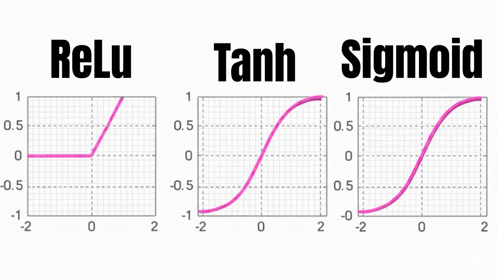

{
"title": "Activation Functions: How AI Makes Decisions",
"excerpt": "Curious how AI thinks? Learn the basics of activation functions like Sigmoid, ReLU, and Tanh in this simple, beginner-friendly guide.",
"tags": ["AI", "Deep Learning", "Neural Networks", "Machine Learning"],
"content": "## Why Do Neural Networks Need Activation Functions?\n\nHi, I’m Robby! As an engineer, I spend my days building AI systems. People often ask me, \"How does a computer actually 'think'?\" The secret sauce is something called an **activation function**.\n\nImagine if a neural network were just a calculator. It could only draw straight lines. If you wanted to convert dollars to euros, a straight line works great. But the real world isn’t a straight line. Think about predicting if a customer will cancel their subscription—that’s messy and complicated. Activation functions add “curves” to the math, allowing AI to learn complex patterns.\n\n## The Sigmoid Function: The Club Bouncer\n\nThink of the **Sigmoid** function like a bouncer at a club door. Its job is to take a number and squash it into a range between 0 and 1. \n\n* **0** means “No” (the person isn’t getting in).\n* **1** means “Yes” (they are getting in).\n* Anything in between is a probability.\n\nIt’s great for yes-or-no decisions, but it has a catch. Sometimes, it makes the math get stuck—we call this the \"vanishing gradient\" problem. When the signal gets too weak, the AI stops learning.\n\n## The ReLU Function: The Light Dimmer\n\n**ReLU** (Rectified Linear Unit) is the superstar of modern AI. You can think of it like a light dimmer switch that doesn't go negative. \n\n* If the signal is negative, ReLU turns it off (sets it to 0).\n* If the signal is positive, ReLU lets it pass right through.\n\nThis simple rule makes AI models train much faster! Sometimes, a ReLU can get "stuck" at zero—this is the \"Dead ReLU\" problem. To fix this, we use clever tricks like **Leaky ReLU**, which lets a tiny bit of negative signal through to keep the learning alive.\n\n## The Tanh Function: The Thermostat\n\nBefore ReLU, the **Tanh** (Hyperbolic Tangent) function was the king of the castle. If Sigmoid is a 0 to 1 scale, Tanh is a -1 to +1 scale. \n\nThink of a thermostat: it handles both cold (negative) and hot (positive) signals. Because it is centered around zero, it often helps the AI learn more smoothly than the Sigmoid function. While ReLU is used more often today, Tanh is still a very important tool in an engineer's toolkit.\n\n## The Big Picture\n\nActivation functions are the tiny decision-makers inside a neural network. Without them, AI would be a boring, straight-line calculator. By choosing the right function—whether it’s the bouncer-like Sigmoid, the efficient ReLU, or the balanced Tanh—we teach computers how to solve the complex problems that run our modern world."
}

Activation Functions Explained: ReLU, Sigmoid, and Tanh (with Visuals)
Activation Functions Explained: ReLU, Sigmoid, and Tanh (with Visuals)
Enjoyed this?
Subscribe to Code With Robby on YouTube for weekly AI engineering content, or try one of my free browser tools.
Subscribe on YouTube → Free tools →